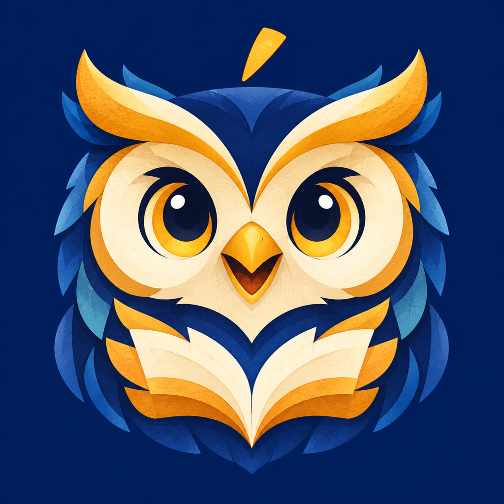

Cyrillic rescue
Separate familiar-looking letters from their real Russian sounds.
西里尔辨形
区分外形熟悉的字母与它们真实的俄语读音。
Giải mã Kirin
Phân biệt chữ trông quen với âm tiếng Nga thật.
Kenali Kiril
Bedakan huruf yang tampak akrab dari bunyi Rusia sebenarnya.

RusQuestA Russian journey for iPhone
Start with Cyrillic, hear where a word lands, and build everyday Russian one small route at a time. No account required.
Hành trình tiếng Nga trên iPhone
Bắt đầu với chữ Kirin, nghe trọng âm và xây dựng tiếng Nga đời thường qua từng chặng ngắn. Không cần tài khoản.
Perjalanan bahasa Rusia di iPhone
Mulai dari Kiril, dengarkan letak tekanan kata, lalu bangun bahasa Rusia sehari-hari lewat rute kecil. Tanpa akun.
The Russian details that matter
Each lesson has a clear focus instead of treating every word like a generic flash card.
真正重要的俄语细节
每课都有明确焦点，而不是把每个词都做成千篇一律的闪卡。
Chi tiết tiếng Nga đáng chú ý
Mỗi bài có một trọng tâm rõ ràng, thay vì biến mọi từ thành thẻ học giống nhau.
Detail bahasa Rusia yang penting
Setiap pelajaran punya fokus yang jelas, bukan sekadar kartu kata yang seragam.
Separate familiar-looking letters from their real Russian sounds.
区分外形熟悉的字母与它们真实的俄语读音。
Phân biệt chữ trông quen với âm tiếng Nga thật.
Bedakan huruf yang tampak akrab dari bunyi Rusia sebenarnya.
Tap vowels and learn where the spoken word finds its rhythm.
点选元音，发现单词真正的节奏落点。
Chạm nguyên âm để nhận ra nhịp điệu thật của từ.
Ketuk vokal dan temukan irama kata yang diucapkan.
Notice how consonants change around soft and hard signs.
观察辅音在软音符和硬音符周围如何变化。
Nhận ra phụ âm thay đổi quanh dấu mềm và dấu cứng.
Amati perubahan konsonan di sekitar tanda lunak dan keras.
Reassemble useful phrases and see how endings carry meaning.
重组实用表达，看见词尾如何承载含义。
Ghép lại câu hữu ích và thấy đuôi từ mang nghĩa ra sao.
Rangkai kembali frasa berguna dan lihat makna dalam akhiran.
A route you can finish
走得完的路线
Một lộ trình có thể hoàn thành
Rute yang bisa diselesaikan
A short diagnostic checks Cyrillic look-alikes, stress, and hard/soft distinctions.
短诊断会检查西里尔形近字、重音和软硬音辨别。
Bài chẩn đoán ngắn kiểm tra chữ Kirin dễ nhầm, trọng âm và âm cứng/mềm.
Diagnostik singkat memeriksa huruf Kiril mirip, tekanan, serta bunyi keras/lunak.
Thirty beginner lessons cover 300 Russian words, useful patterns, and short dialogues.
30 节入门课包含 300 个俄语词、实用句型和短对话。
30 bài nhập môn gồm 300 từ Nga, mẫu câu hữu ích và hội thoại ngắn.
30 pelajaran pemula berisi 300 kata Rusia, pola berguna, dan dialog singkat.
Every lesson has a free progress route. Optional ads never replace the learning path.
每课都能通过学习进度免费解锁；可选广告不会取代学习路线。
Mọi bài đều có đường mở miễn phí theo tiến độ; quảng cáo tùy chọn không thay thế việc học.
Semua pelajaran punya jalur gratis melalui progres; iklan opsional tidak menggantikan belajar.
Local-first by design
本地优先设计
Ưu tiên dữ liệu trên máy
Mengutamakan perangkat
No account is required. Learning progress is stored on the iPhone, and optional voice recordings are temporary and are not uploaded.
Read the privacy policy无需账户。学习进度保存在 iPhone 上，可选语音练习的临时录音不会上传。
阅读隐私政策Không cần tài khoản. Tiến độ lưu trên iPhone; bản ghi giọng nói tùy chọn chỉ là tạm thời và không tải lên.
Đọc chính sách riêng tưTanpa akun. Progres disimpan di iPhone; rekaman suara opsional bersifat sementara dan tidak diunggah.
Baca kebijakan privasi